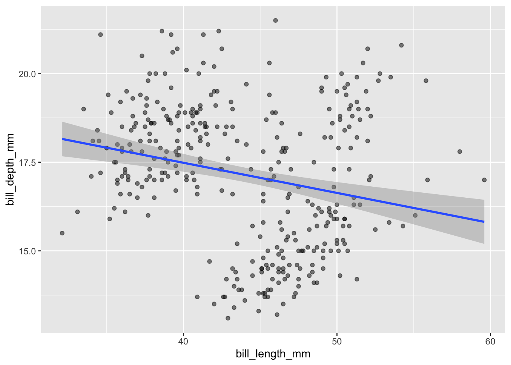
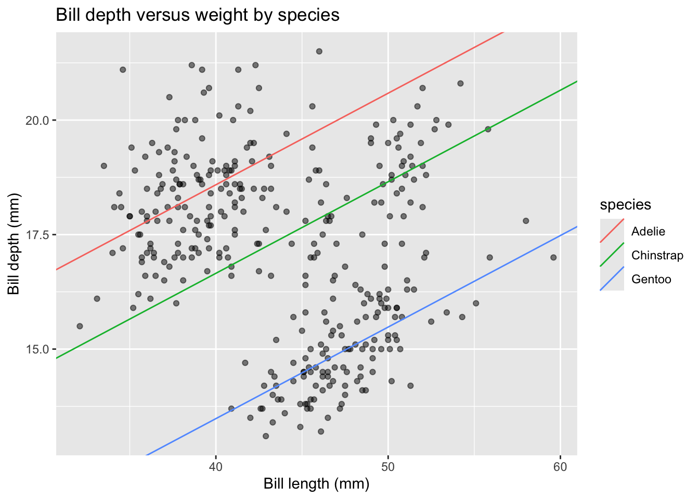
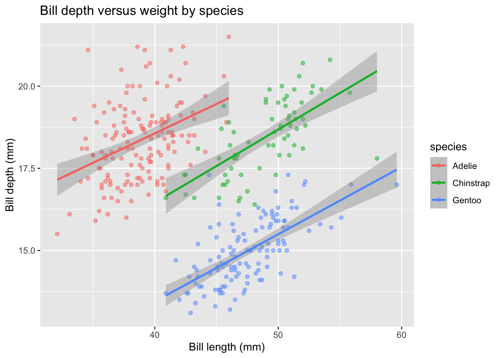
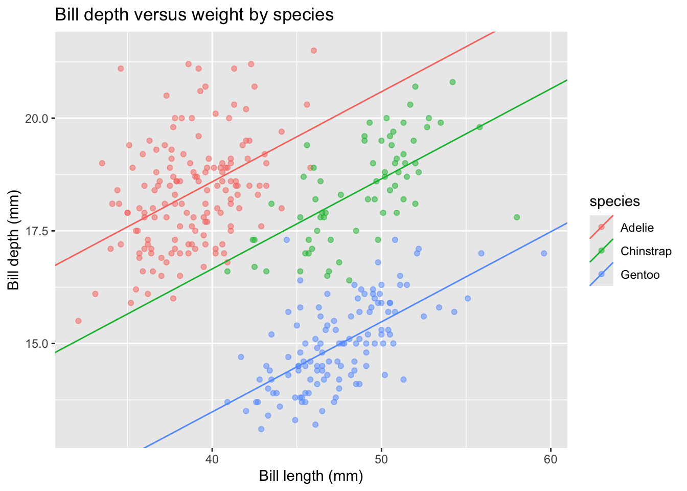

install.packages("palmerpenguins")Demo 03: More Regression with Penguins
Regression with Penguins
The graphs below don’t have proper titles, axis labels, legends, etc. Please take care to do this on your own graphs. Throughout this demo we will use the palmerpenguins dataset. To access the data, you will need to install the palmerpenguins package:
We load the penguins data in the same way as before:
library(tidyverse)
library(palmerpenguins)
data(penguins)
head(penguins)# A tibble: 6 × 8
species island bill_length_mm bill_depth_mm flipper_length_mm body_mass_g
<fct> <fct> <dbl> <dbl> <int> <int>
1 Adelie Torgersen 39.1 18.7 181 3750
2 Adelie Torgersen 39.5 17.4 186 3800
3 Adelie Torgersen 40.3 18 195 3250
4 Adelie Torgersen NA NA NA NA
5 Adelie Torgersen 36.7 19.3 193 3450
6 Adelie Torgersen 39.3 20.6 190 3650
# ℹ 2 more variables: sex <fct>, year <int>Simple Linear Regression (based only on bill length)
First, we can run a simple linear regression (the first model) based only on bill length. We can display this line via geom_smooth():
penguins |>
ggplot(aes(x = bill_length_mm, y = bill_depth_mm)) +
geom_point(alpha = 0.5) +
geom_smooth(method = "lm", se = TRUE)
And display the regression model output using summary():
summary(lm(bill_depth_mm ~ bill_length_mm, data = penguins))
Call:
lm(formula = bill_depth_mm ~ bill_length_mm, data = penguins)
Residuals:
Min 1Q Median 3Q Max
-4.1381 -1.4263 0.0164 1.3841 4.5255
Coefficients:
Estimate Std. Error t value Pr(>|t|)
(Intercept) 20.88547 0.84388 24.749 < 2e-16 ***
bill_length_mm -0.08502 0.01907 -4.459 1.12e-05 ***
---
Signif. codes: 0 '***' 0.001 '**' 0.01 '*' 0.05 '.' 0.1 ' ' 1
Residual standard error: 1.922 on 340 degrees of freedom
(2 observations deleted due to missingness)
Multiple R-squared: 0.05525, Adjusted R-squared: 0.05247
F-statistic: 19.88 on 1 and 340 DF, p-value: 1.12e-05We can write this regression model as:
\[\text{depth} \sim N(\beta_0 + \beta_L \cdot \text{length}, \sigma^2)\]
Note that \(\beta_0\) is the intercept and \(\beta_L\) is the slope.
Thus, our estimates are:
- \(\hat{\beta}_0 = 20.88547\)
- \(\hat{\beta}_L = 12.43\)
- \(\hat{\sigma}^2 = 1.922^2\)
Multiple Linear Regression (Additive)
We can also run the second model, which is based on length and species, but with only additive effects. First, we’ll check the counts of the species variable to ensure that the species with the highest number of observations if the reference level (i.e., the first level for a factor variable):
table(penguins$species)
Adelie Chinstrap Gentoo
152 68 124 Looks like we’re lucky and that the Adelie species is the most popular and is already first due to alphabetical order. What function would we need to do to re-order the variable?
Next, we’ll fit the regression that accounts for species without an interaction - so it’s just an additive effect:
depth_lm_species_add <- lm(bill_depth_mm ~ bill_length_mm + species,
data = penguins)
summary(depth_lm_species_add)
Call:
lm(formula = bill_depth_mm ~ bill_length_mm + species, data = penguins)
Residuals:
Min 1Q Median 3Q Max
-2.4529 -0.6864 -0.0508 0.5519 3.5915
Coefficients:
Estimate Std. Error t value Pr(>|t|)
(Intercept) 10.59218 0.68302 15.508 < 2e-16 ***
bill_length_mm 0.19989 0.01749 11.427 < 2e-16 ***
speciesChinstrap -1.93319 0.22416 -8.624 2.55e-16 ***
speciesGentoo -5.10602 0.19142 -26.674 < 2e-16 ***
---
Signif. codes: 0 '***' 0.001 '**' 0.01 '*' 0.05 '.' 0.1 ' ' 1
Residual standard error: 0.9533 on 338 degrees of freedom
(2 observations deleted due to missingness)
Multiple R-squared: 0.769, Adjusted R-squared: 0.7669
F-statistic: 375.1 on 3 and 338 DF, p-value: < 2.2e-16This tells us that Chinstrap is different from Adelie and Gentoo is different from Adelie, but it does NOT tell us Chinstrap is different from Gentoo. That would require another model with a reordered species variable. Exercise: Reorder species so that Gentoo is the reference level and compare to the results above.
We can manually extract intercepts and coefficients to use for plotting (read the code comments!):
# Calculate species-specific intercepts in order:
intercepts <- # First for `Adelie` it's just the initial intercept
c(coef(depth_lm_species_add)["(Intercept)"],
# Next for `Chinstrap` it's the intercept plus the `Chinstrap` term:
coef(depth_lm_species_add)["(Intercept)"] +
coef(depth_lm_species_add)["speciesChinstrap"],
# And finally for `Gentoo` it's again the intercept plus the `Gentoo` term
coef(depth_lm_species_add)["(Intercept)"] +
coef(depth_lm_species_add)["speciesGentoo"])
# Create a small table to store the intercept, slopes, and species:
lines_tbl <- tibble("intercepts" = intercepts,
# Slopes are the same for each, thus use rep()
"slopes" = rep(coef(depth_lm_species_add)["bill_length_mm"],
3),
# And the levels of species:
"species" = levels(penguins$species))We can now plot this model by specifying the regression lines with geom_abline() using the newly constructed lines_tbl as the data for this layer:
penguins |>
ggplot(aes(x = bill_length_mm, y = bill_depth_mm)) +
geom_point(alpha = 0.5) +
geom_abline(data = lines_tbl,
aes(intercept = intercepts, slope = slopes,
color = species)) +
labs(x = "Bill length (mm)", y = "Bill depth (mm)",
title = "Bill depth versus weight by species")
This is a great example of Simpson’s Paradox! We originally observed a negative linear relationship between depth and length, but now observe a positive linear relationship within species!
Multiple Linear Regression (Interactive)
Next, we can run the third model, which is based on length and species, including interaction effects. This is the default type of model displayed when we map species to the color aesthetic for the geom_smooth() layer. In the plot below, we display across both layers, geom_point() and geom_smooth() by mapping species to color in the initial ggplot canvas construction:
penguins |>
ggplot(aes(x = bill_length_mm, y = bill_depth_mm, color = species)) +
geom_point(alpha = 0.5) +
geom_smooth(method = "lm", se = TRUE) +
labs(x = "Bill length (mm)", y = "Bill depth (mm)",
title = "Bill depth versus weight by species")
What about the summary of this model? Is the inclusion of interaction terms relevant? Note that by default, multiplying two variables in the lm() formula below includes both the additive AND interaction terms.
depth_lm_species_int <- lm(bill_depth_mm ~ bill_length_mm * species,
data = penguins)
summary(depth_lm_species_int)
Call:
lm(formula = bill_depth_mm ~ bill_length_mm * species, data = penguins)
Residuals:
Min 1Q Median 3Q Max
-2.6574 -0.6675 -0.0524 0.5383 3.5032
Coefficients:
Estimate Std. Error t value Pr(>|t|)
(Intercept) 11.40912 1.13812 10.025 < 2e-16 ***
bill_length_mm 0.17883 0.02927 6.110 2.76e-09 ***
speciesChinstrap -3.83998 2.05398 -1.870 0.062419 .
speciesGentoo -6.15812 1.75451 -3.510 0.000509 ***
bill_length_mm:speciesChinstrap 0.04338 0.04558 0.952 0.341895
bill_length_mm:speciesGentoo 0.02601 0.04054 0.642 0.521590
---
Signif. codes: 0 '***' 0.001 '**' 0.01 '*' 0.05 '.' 0.1 ' ' 1
Residual standard error: 0.9548 on 336 degrees of freedom
(2 observations deleted due to missingness)
Multiple R-squared: 0.7697, Adjusted R-squared: 0.7662
F-statistic: 224.5 on 5 and 336 DF, p-value: < 2.2e-16The interaction terms do NOT appear to be necessary to include. This is justified by both the lack of significance and the slight drop in adjusted R-squared.
What about the intercept?
Remember the meaning of the intercept term… that is not reasonable in this setting because penguins will never have bills with length of 0mm! We should update the additive model (since we found the interaction terms to not be meaningful) to remove the intercept. This can be done by adding a 0 term to the lm() formula:
depth_lm_remove_b0 <- lm(bill_depth_mm ~ 0 + bill_length_mm + species,
data = penguins)
summary(depth_lm_remove_b0)
Call:
lm(formula = bill_depth_mm ~ 0 + bill_length_mm + species, data = penguins)
Residuals:
Min 1Q Median 3Q Max
-2.4529 -0.6864 -0.0508 0.5519 3.5915
Coefficients:
Estimate Std. Error t value Pr(>|t|)
bill_length_mm 0.19989 0.01749 11.427 < 2e-16 ***
speciesAdelie 10.59218 0.68302 15.508 < 2e-16 ***
speciesChinstrap 8.65899 0.86207 10.044 < 2e-16 ***
speciesGentoo 5.48616 0.83547 6.567 1.94e-10 ***
---
Signif. codes: 0 '***' 0.001 '**' 0.01 '*' 0.05 '.' 0.1 ' ' 1
Residual standard error: 0.9533 on 338 degrees of freedom
(2 observations deleted due to missingness)
Multiple R-squared: 0.997, Adjusted R-squared: 0.997
F-statistic: 2.795e+04 on 4 and 338 DF, p-value: < 2.2e-16What changed in the summary output? Why did that occur?
We can copy-and-paste our code from above to add these appropriate regression lines:
# Calculate species-specific intercepts in order:
new_intercepts <- # First for `Adelie`
c(coef(depth_lm_remove_b0)["speciesAdelie"],
# Next for `Chinstrap`
coef(depth_lm_remove_b0)["speciesChinstrap"],
# And finally for `Gentoo`
coef(depth_lm_remove_b0)["speciesGentoo"])
# Create a small table to store the intercept, slopes, and species:
new_lines_tbl <-
tibble("intercepts" = new_intercepts,
# Slopes are the same for each, thus use rep()
"slopes" = rep(coef(depth_lm_remove_b0)["bill_length_mm"],
3),
# And the levels of species:
"species" = levels(penguins$species))Again, create the display:
penguins |>
ggplot(aes(x = bill_length_mm, y = bill_depth_mm, color = species)) +
geom_point(alpha = 0.5) +
geom_abline(data = new_lines_tbl,
aes(intercept = intercepts, slope = slopes,
color = species)) +
labs(x = "Bill length (mm)", y = "Bill depth (mm)",
title = "Bill depth versus weight by species")
Why is this the same display as before? Here’s a great description of why we observe a higher R-squared with the intercept-term excluded from the model.